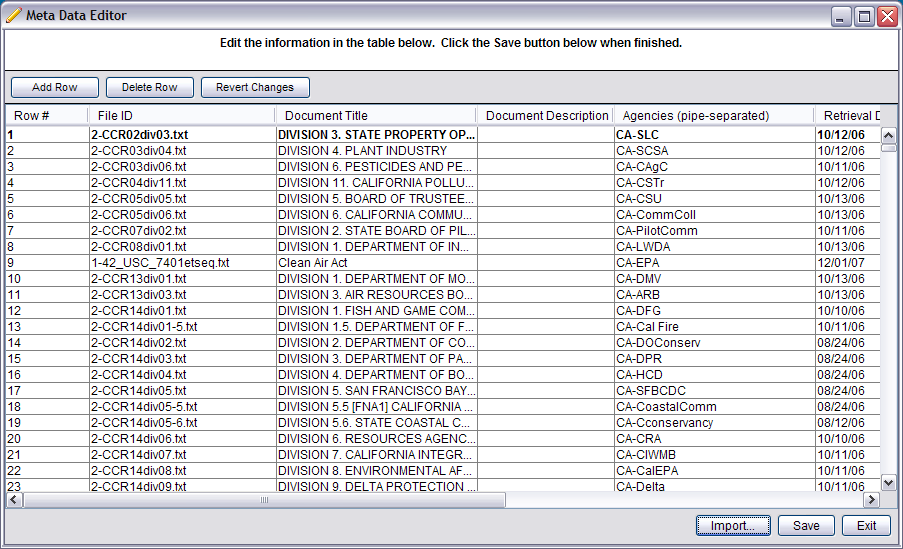
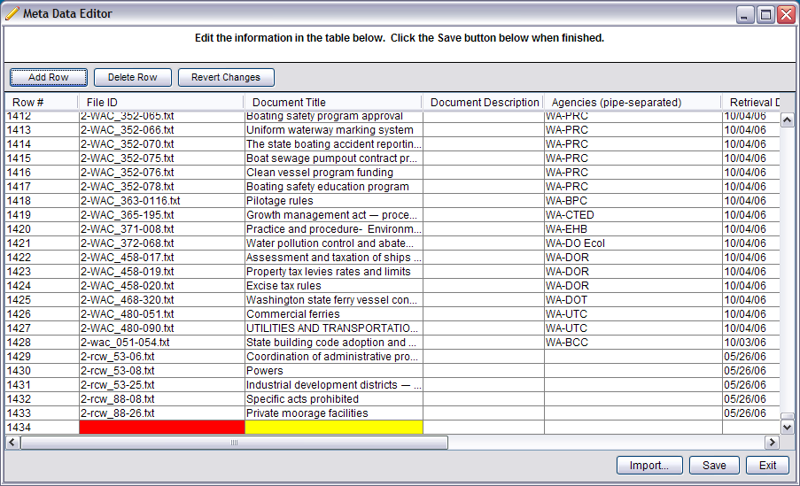
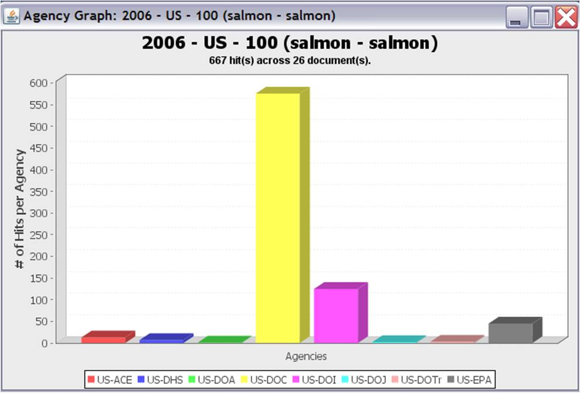
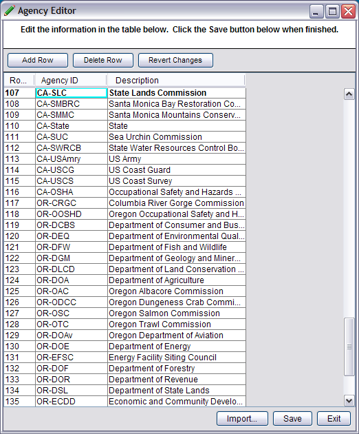

The Meta Data Editor and the Agency Editor allow you add, update or remove information about MINOE's document collection.
What is Meta Data for?
Simply having a collection of documents to search through is not enough for running a meaningful analysis. There needs to be meta information so that you can decide what to call the documents, how those documents should be tagged and how your results should be filtered or grouped.
Click the Meta Data button in the top menu bar of MINOE to open the Meta Data Editor:

Information is displayed in a table format, where each cell is editable.
Up top, the buttons function as follows:
Below:
When you add a new row, the fields that are required are highlighted in red and yellow:

The Agency Editor
Agency Data is not used for building search criteria with this release, it is only used for displaying agency graphs about the documents that were found in the gap analysis results, like the one in the figure below:

Click the Agencies button in the top menu bar of MINOE to open the Agency Data Editor:

The features of the Agency Editor and the Meta Data Editor are the same as described above.
In the figure above, you can see that the Agency ID on row 107 corresponds with row #1 of the "Agencies" column in the first figure. The Agency ID and Agency Description can be called whatever you like.